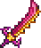

Звездная ярость
Звёздная ярость (Starfury) — меч, который можно найти только на парящих островах или при открытии небесного ящика. Когда вы бьёте мечом, 1 звезда прицельно падает с верхней части экрана в ту точку, где был курсор во время удара.
Сторона, с которой падают звёзды, зависит от положения курсора. Падающая звезда наносит урон, равный 150% урона самого оружия, может нанести критический удар, пробить одну цель насквозь и имеет время перезарядки – 1 секунду, во время перезарядки можно атаковать мечом. По окончании перезарядки проигрывается звук полного восстановления маны. Также звёзды могут падать сквозь блоки, пока не достигнут курсора игрока.
Звездная ярость

Характеристики
Тип Оружие Меч
Урон 25+37

Скорость 21 (Быстрая)
Атак/сек 2
Крит. шанс 4%
Отбрасывание 5 (Среднее)
Редкость Зеленая
Продажа 1

Лучшая модификация Легендарный
Кол-во исследований 1 исследование
Примечания
Звёздная ярость имеет улучшенную версию –  Звёздный гнев.
Если звезда сформировалась внутри твёрдых блоков, то она будет падать до тех пор, пока не достигнет свободного пространства. После этого она исчезнет при контакте с первым блоком или платформой на своём пути.
Меч эффективен против скоплений врагов. Также удобно то, что при помощи звёзд можно убивать мобов, не выходя из дома, т.е. в замкнутом пространстве, куполе, коробке и т.д.
Благодаря тому, что вызванные звёзды излучают свет, при помощи этого оружия удобно находить пещеры, скрытые комнаты под землёй и руду под ними.
Будьте осторожны при исследовании джунглей, нечаянно вызванная звезда может уничтожить личинку и вы начнёте битву с Королевой пчёл неподготовленными.